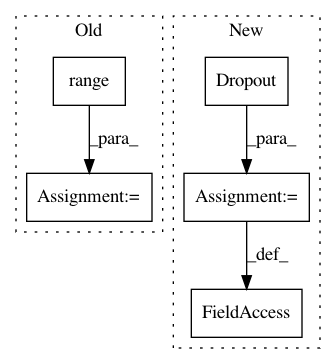

509453992838a524f6442d4e0f07a034390ae1f7,layers/eight_mile/pytorch/layers.py,ConvEncoderStack,__init__,#ConvEncoderStack#Any#Any#Any#Any#Any#Any#,283
Before Change
first_layer = ConvEncoder(insz, outsz, filtsz, pdrop, activation)
subsequent_layer = ResidualBlock(ConvEncoder(outsz, outsz, filtsz, pdrop, activation))
self.layers = nn.ModuleList([first_layer] + [copy.deepcopy(subsequent_layer) for _ in range(layers - 1)])
self.output_dim = outsz
def forward(self, input_bct: torch.Tensor) -> torch.Tensor:
After Change
conv = Conv1DSame(insz, outsz, filtsz)
act = get_activation(activation)
dropout = nn.Dropout(pdrop)
if hidden_last:
self.conv = nn.Sequential(BTH2BHT(), conv, act, dropout, BHT2BTH())
else:
self.conv = nn.Sequential(conv, act, dropout)
def forward(self, input: torch.Tensor) -> torch.Tensor:
return self.conv(input)
In pattern: SUPERPATTERN
Frequency: 4
Non-data size: 5
Instances
Project Name: dpressel/mead-baseline
Commit Name: 509453992838a524f6442d4e0f07a034390ae1f7
Time: 2020-02-13
Author: dpressel@gmail.com
File Name: layers/eight_mile/pytorch/layers.py
Class Name: ConvEncoderStack
Method Name: __init__
Project Name: dmlc/gluon-nlp
Commit Name: 70a188776f7470c838dd22b1636462b75573a734
Time: 2020-07-16
Author: lausen@amazon.com
File Name: src/gluonnlp/models/bert.py
Class Name: BertTransformer
Method Name: __init__
Project Name: OpenNMT/OpenNMT-py
Commit Name: 3bc7e38ed98f3b7a13fcee2726ec38b27e5c4e1b
Time: 2017-06-23
Author: srush@sum1gpu02.rc.fas.harvard.edu
File Name: onmt/Models.py
Class Name: Encoder
Method Name: __init__
Project Name: dpressel/mead-baseline
Commit Name: 509453992838a524f6442d4e0f07a034390ae1f7
Time: 2020-02-13
Author: dpressel@gmail.com
File Name: layers/eight_mile/tf/layers.py
Class Name: ConvEncoderStack
Method Name: __init__